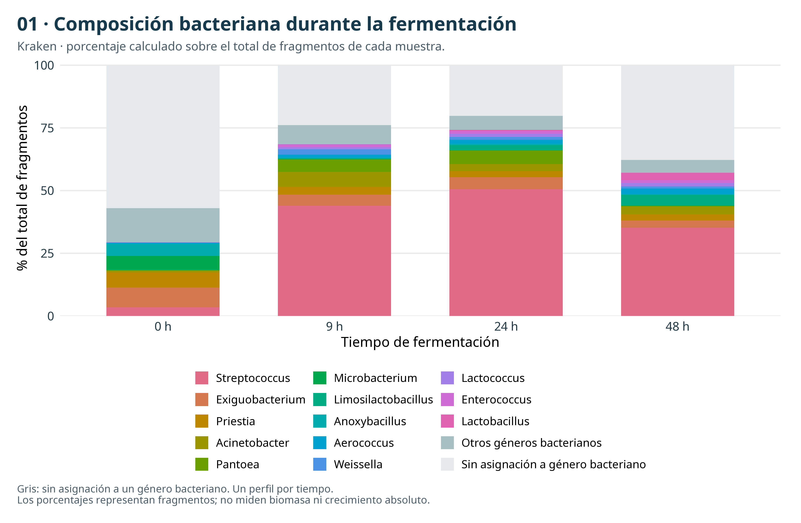
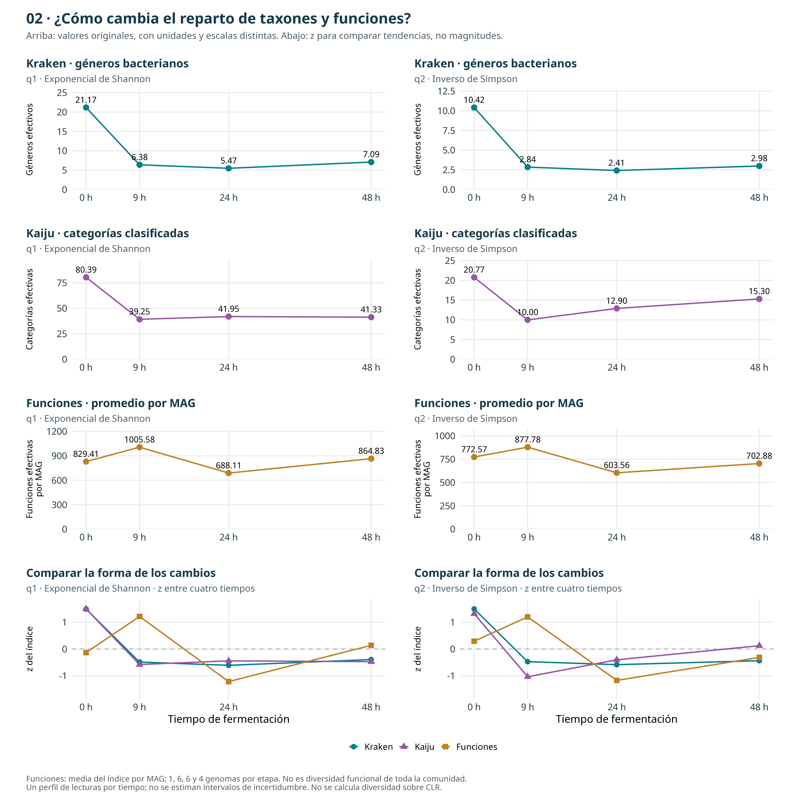
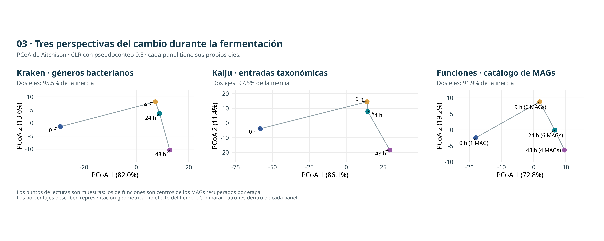
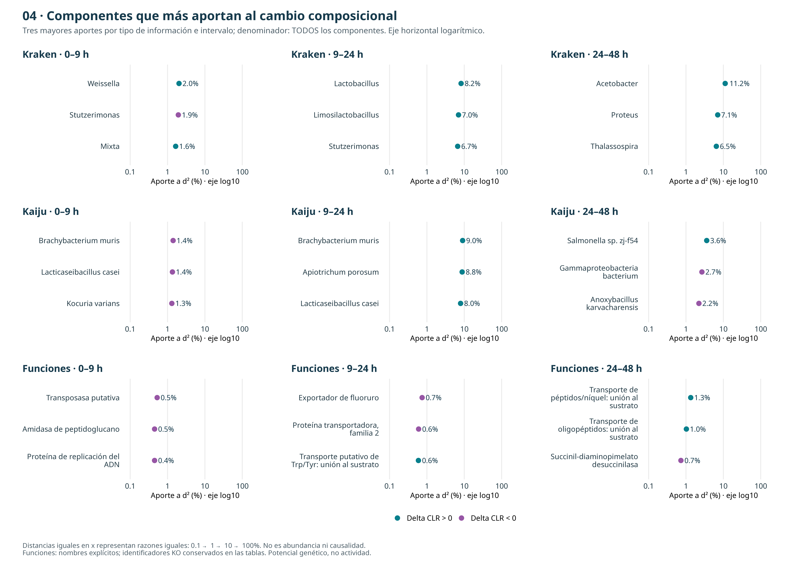
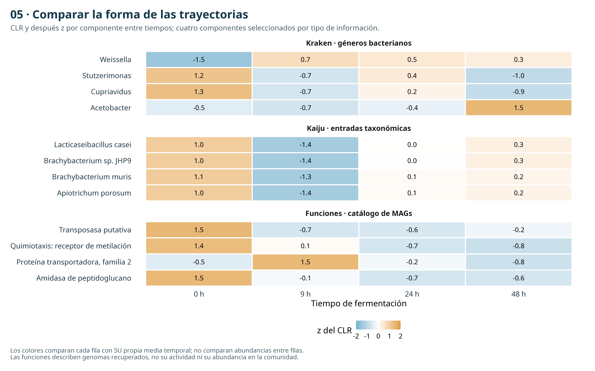
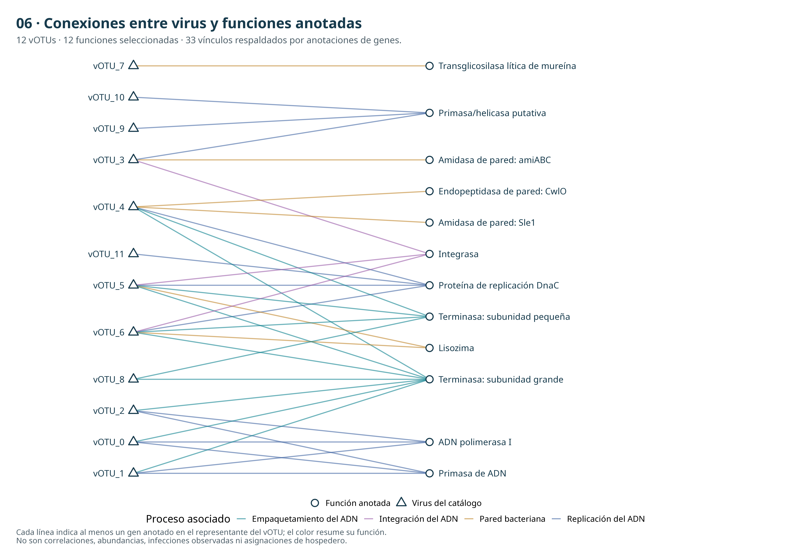
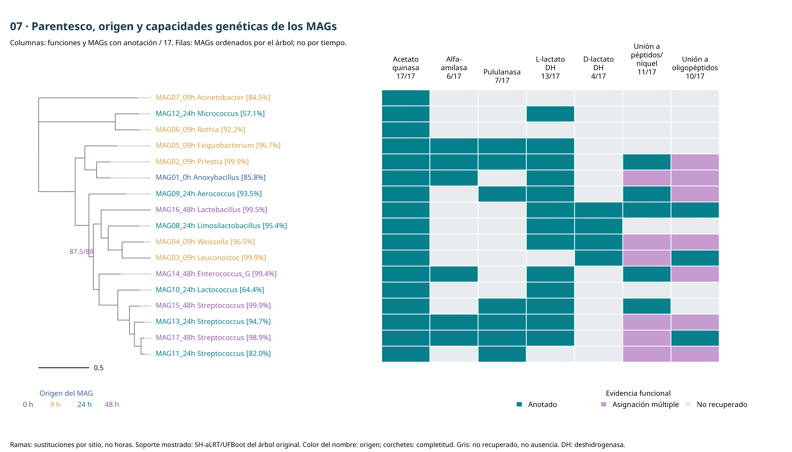
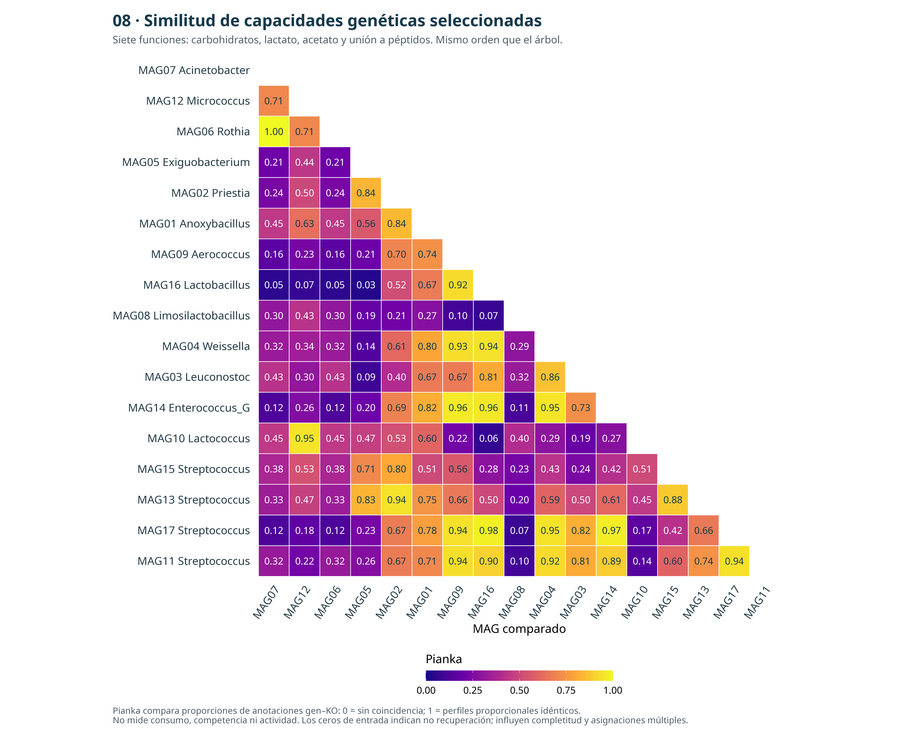
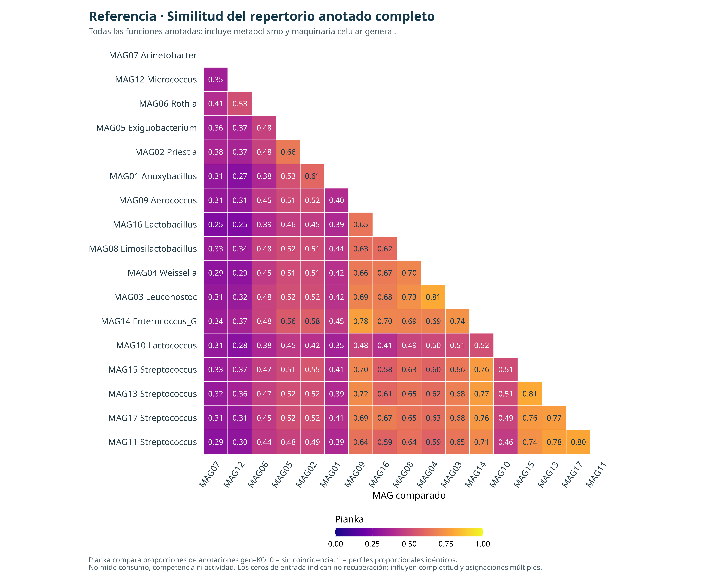
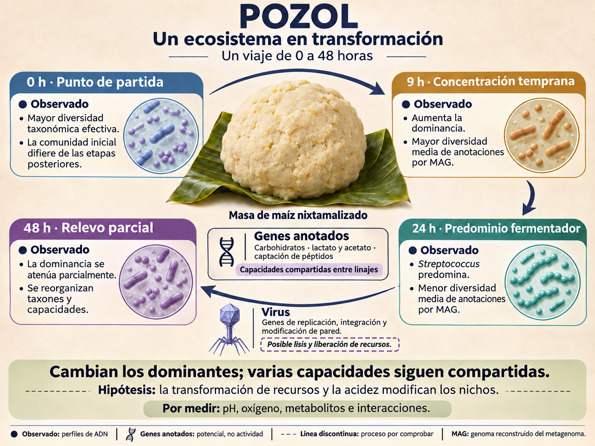

Consultar de qué archivo sale cada evidencia
Comparamos tres tipos de información: composición taxonómica según Kraken, composición taxonómica según Kaiju y repertorio de funciones de los MAGs. Los virus ensamblados y el árbol bacteriano aportan otras evidencias, con un alcance distinto.
| Información | Archivo del curso → insumo de la síntesis | Qué mide |
|---|---|---|
| Kraken | results/08.kraken/*hrs_sm.kreport → data/09_sintesis/generos_conteos.tsv y denominadores.tsv | Fragmentos asignados a géneros bacterianos. Se reconstruye la jerarquía y se conserva el rango G exacto, sin sumar ancestros con descendientes. |
| Kaiju | results/07.kaiju/matrix.tsv → data/09_sintesis/kaiju_matrix.tsv | Entradas del resumen taxonómico disponible, de rangos mezclados. Se excluye unclassified. Son categorías clasificadas, no un conjunto uniforme de especies. |
| Funciones | results/21.kofam/MAG*.txt → data/09_sintesis/MAG_KO_conteos.tsv | Asignaciones gen–KO aceptadas (*) por MAG. Un gen puede tener varias asignaciones: se conserva esa ambigüedad. No son abundancias funcionales de las muestras. |
| Metadatos de MAGs | GTDB-Tk y CheckM2 de results/19.gtdbtk_global/ → data/09_sintesis/MAG_metadata.tsv | Género, especie, completitud, contaminación y etapa de origen de cada MAG. |
| Virus del curso | results/26.votus/catalogo_vOTUs.tsv + results/27.genomad/*_annotate/*_taxonomy.tsv + CheckV → catalogo_vOTUs.tsv, taxonomia_viral_geNomad.tsv y vOTU_metadata.tsv en data/09_sintesis/ | Los 12 vOTUs del módulo de viromas. Identidad de secuencia, taxonomía, calidad y ensamblaje de origen; no abundancia por muestra ni hospedero. |
| Funciones virales | Anotaciones VIBRANT de los representantes → trazabilidad/09_sintesis/14_genes_virales_representantes.tsv. | La red enlaza vOTU y función por anotaciones de genes; no cuantifica infección o abundancia. |
| Filogenia bacteriana | 09_filogenomica_mags_entrega/23.iqtree/bac120_17mags.treefile del repositorio → data/09_sintesis/bac120_17mags.treefile | Árbol IQ-TREE de los mismos 17 MAGs, con longitudes de rama y soportes. Se reutiliza, no se vuelve a estimar. |
Unidad de observación: hay un perfil de lecturas por tiempo: 0, 9, 24 y 48 h. Se recuperaron 1, 6, 6 y 4 MAGs, respectivamente. Estos genomas no son réplicas de fermentaciones. No tenemos mediciones de pH, oxígeno, metabolitos ni abundancia absoluta.
Los virus corresponden a los vOTUs ensamblados y clasificados en la sección 07.Asignacion. Cada vOTU tiene una secuencia representante. Su taxonomía no proporciona por sí sola abundancias temporales ni identifica al hospedero.
Consultar identificadores y uniones de archivos
Una unión relaciona filas que representan la misma entidad. Primero identificamos la entidad y su clave; después comprobamos duplicados y correspondencia. No unimos por posición de fila ni por parecido entre nombres.
| Unión | Clave exacta y ejemplo | Relación y comprobación |
|---|---|---|
| Kraken entre tiempos | taxid de NCBI; por ejemplo 1301 para Streptococcus. | Un TaxID por fila y tiempo. Se unen conteos del mismo género; name solo etiqueta la figura. No se suman niveles jerárquicos. |
| Kaiju entre columnas | Texto completo de Taxonomy, incluida la ruta taxonómica. | Una fila de la matriz por categoría. La última parte de la ruta sirve como etiqueta corta. No unimos automáticamente Kaiju con Kraken por el nombre del género. |
| MAG ↔ árbol ↔ calidad ↔ anotación | ID completo, por ejemplo MAG17_48h. Corresponde a user_genome en GTDB-Tk, Name en CheckM2, punta del árbol y nombre base del archivo Kofam. | Los 17 IDs coinciden. Se renombran las columnas a MAG y se usa match() para ordenar por la clave. No se usa solo Streptococcus: hay varios MAGs de ese género. |
| Gen ↔ función | Clave de gen MAG + gene; anotación identificada por MAG + gene + KO. | Un MAG tiene muchos genes; un gen puede tener varios KO aceptados. La matriz cuenta genes distintos por pareja MAG–KO. La tabla conserva n_KO_for_gene. |
| KO ↔ nombre funcional | KO, por ejemplo K01176 → alfa-amilasa. | El identificador enlaza Kofam, matriz y diccionario. Los gráficos muestran nombres; los códigos quedan en tablas y código para conservar trazabilidad. |
| Catálogo viral ↔ geNomad ↔ CheckV | secuencia = seq_name = contig_id; ejemplo 09h_k89_68057||full. | Se conserva el nombre completo, incluido ||full. Para clasificar cada vOTU se toma su representante y se busca la misma secuencia en geNomad y CheckV. |
| Miembros virales ↔ representante | vOTU, por ejemplo vOTU_1. | Muchos contigs pueden pertenecer al mismo vOTU. Solo una fila tiene rol representante. Para el origen se consideran todos los miembros; para calidad y taxonomía, el representante. |
| Gen viral ↔ función | scaffold de VIBRANT = secuencia representante del catálogo; gen identificado por vOTU + protein; función por KO. | Muchos genes por representante. Una arista conserva al menos una anotación vOTU–KO; la tabla de evidencia conserva los genes que la sustentan. |
| Perfiles ↔ tiempo | Tiempo_h: 0, 9, 24 o 48. La etiqueta 9hrs y el sufijo _09h se homologan a 9. | Sirve para ordenar o agrupar perfiles. Compartir tiempo no identifica una especie, una cepa ni una pareja virus–hospedero. |
No confundir espacios de identificadores: el taxid de Kraken es NCBI; el de geNomad pertenece a su taxonomía viral. Un número igual entre bases no garantiza el mismo taxón. Tampoco se convierte un nombre de GTDB a NCBI sin una correspondencia validada. Aquí las comparaciones Kaiju–Kraken se hacen entre perfiles de los mismos tiempos, no fusionando taxones.
Los bloques muestran las comprobaciones !anyDuplicated(), setequal() y match(). Los nombres traducidos están en data/09_sintesis/nombres_funciones.tsv, junto a su KO y definición original.
1. Composición: quién gana representación
Procedencia: data/09_sintesis/generos_conteos.tsv y denominadores.tsv, derivados de Kraken.
Objetivo: Tener a la vista la identidad de los géneros que dominan. Esta figura de contexto permitirá interpretar por qué cambia la diversidad.

El eje x ordena los tiempos. Cada color ocupa el porcentaje del total de fragmentos asignado a ese género; el gris conserva los fragmentos fuera de esos géneros bacterianos.
Porcentaje = 100 × fragmentos del género / total de fragmentos. Streptococcus representa 3.52% a 0 h, 50.61% a 24 h y 35.18% a 48 h.
Interpretación ecológica: Ventaja de los fermentadores. La dominancia de Streptococcus es compatible con que aprovechar carbohidratos y tolerar las condiciones de fermentación otorgue ventaja relativa. Los aumentos tardíos de otros géneros lácticos sugieren un relevo parcial, no la sustitución completa del dominante. Acidificación y competencia son mecanismos candidatos, todavía por medir. [3]
Lectura orientativa
No. Puede aumentar el numerador, disminuir otros organismos, o ambas cosas. Hace falta una referencia de cantidad para estimar células o copias por gramo.
Mostrar código y ejecución
cat > scripts/09_sintesis/01_composicion.R <<'RSCRIPT'
source("scripts/09_sintesis/00_preparar.R", encoding = "UTF-8")
# FIGURA 1. Los 12 generos con mayor porcentaje medio + Lactobacillus,
# que se incluye explicitamente para examinar su aumento tardio.
top <- unique(c(order(rowMeans(porcentaje), decreasing = TRUE)[1:12],
which(tabla$name == "Lactobacillus")))
barras <- rbind(porcentaje[top, , drop = FALSE],
colSums(porcentaje) - colSums(porcentaje[top, , drop = FALSE]),
100 - colSums(porcentaje))
rownames(barras) <- c(tabla$name[top], "Otros géneros bacterianos", "Sin asignación a género bacteriano")
perfil <- data.frame(Grupo = rep(rownames(barras), times = 4),
Tiempo = factor(rep(etiquetas, each = nrow(barras)), levels = etiquetas),
Porcentaje = as.vector(barras))
perfil$Grupo <- factor(perfil$Grupo, levels = rownames(barras))
paleta <- setNames(c(hcl.colors(length(top), "Dark 3"), "#A8BFC3", "#E6E9EC"), rownames(barras))
fig1 <- ggplot(perfil, aes(Tiempo, Porcentaje, fill = Grupo)) +
geom_col(width = 0.66, position = position_stack(reverse = TRUE)) +
scale_fill_manual(values = paleta) +
scale_y_continuous(limits = c(0, 100), expand = expansion(mult = c(0, 0.02))) +
labs(title = "01 · Composición bacteriana durante la fermentación",
subtitle = "Kraken · porcentaje calculado sobre el total de fragmentos de cada muestra.",
x = "Tiempo de fermentación", y = "% del total de fragmentos", fill = NULL,
caption = "Gris: sin asignación a un género bacteriano. Un perfil por tiempo.\nLos porcentajes representan fragmentos; no miden biomasa ni crecimiento absoluto.") +
guides(fill = guide_legend(ncol = 3)) +
theme(panel.grid.major.x = element_blank(), legend.text = element_text(size = 13))
ggsave("results/09_sintesis/01_composicion.pdf", fig1, width = 13, height = 8.5, device = cairo_pdf)
ggsave("results/09_sintesis/01_composicion.png", fig1, device = "png", type = "cairo", width = 13, height = 8.5, dpi = 300)
writeLines(capture.output(sessionInfo()), "results/09_sintesis/sessionInfo.txt")
RSCRIPT
OMP_NUM_THREADS=1 OPENBLAS_NUM_THREADS=1 Rscript --vanilla scripts/09_sintesis/01_composicion.R
2. Diversidad comparada: Kraken, Kaiju y funciones
Procedencia: Kraken: todos los géneros bacterianos. Kaiju: categorías clasificadas de la matriz original, sin unclassified. Funciones: todas las asignaciones gen–KO por MAG, antes de los filtros CLR.
Objetivo: Distinguir concentración de la comunidad y variedad de anotaciones por genoma. Menor diversidad taxonómica no implica automáticamente menor capacidad metabólica.
La diversidad combina riqueza (cuántas categorías) y equitatividad (cómo se reparte su representación). Aquí contamos fragmentos taxonómicos y anotaciones por MAG, no individuos ni actividad metabólica.
| Índice | Pregunta que responde | Lectura |
|---|---|---|
| q1 = exp(H′) | ¿Cuánta incertidumbre hay sobre la categoría de un elemento sorteado? | Shannon considera todas las proporciones; responde más a categorías poco representadas que q2, pero no mide exclusivamente rareza. |
| q2 = 1/Σp² | ¿Cuánto pesan los dominantes? | Σp² es la probabilidad de coincidencia en dos sorteos independientes. Su inverso aumenta cuando se reduce la concentración. |
Ambos se expresan en números efectivos de categorías, desde 1 hasta la riqueza observada. No son porcentajes ni tienen umbrales universales de comunidad «sana». [1]

Izquierda: q1; derecha: q2. Las tres primeras filas muestran valores de diversidad efectiva; solo la última muestra z. Allí, cero es el promedio de cada serie y +1 significa una desviación estándar por encima. z compara formas, no cantidades.
A 24 h, Kraken tiene q1 = 5.47 y q2 = 2.41: equivale, según cada índice, a esos números de géneros igualmente representados. Como D = 1/q2, dos fragmentos sorteados independientemente dentro de los géneros bacterianos clasificados tienen una probabilidad estimada de 41.5% de coincidir en género.
Interpretación ecológica: Concentración taxonómica, sin una contracción funcional paralela. La caída conjunta de q1 y q2 es compatible con un filtro que favorece a ciertos fermentadores. El pico de anotaciones diversas por MAG a 9 h permite plantear que pocos grupos dominantes conserven capacidades variadas. No demuestra especialización, pérdida de especies ni degradación del sistema.
Lectura orientativa
q1 mayor que q2 indica representación desigual y aporte de categorías menos dominantes. La fermentación puede favorecer pocos organismos capaces de transformar el sustrato; diversidad, seguridad alimentaria y funcionamiento son propiedades distintas.
Mostrar código y ejecución
cat > scripts/09_sintesis/02_diversidad.R <<'RSCRIPT'
source("scripts/09_sintesis/00_preparar.R", encoding = "UTF-8")
library(patchwork)
# Diversidad sobre proporciones originales: no CLR ni pseudoconteos.
k <- read.delim("data/09_sintesis/kaiju_matrix.tsv", check.names = FALSE)
k <- k[k$Taxonomy != "unclassified", ]
kaiju <- t(as.matrix(k[, c("0hrs", "9hrs", "24hrs", "48hrs")]))
mag <- as.matrix(read.delim("data/09_sintesis/MAG_KO_conteos.tsv", row.names = 1, check.names = FALSE))
meta <- read.delim("data/09_sintesis/MAG_metadata.tsv", check.names = FALSE)
stopifnot(!anyDuplicated(meta$MAG), setequal(rownames(mag), meta$MAG))
meta <- meta[match(rownames(mag), meta$MAG), ]
# Un índice por muestra (lecturas) o por MAG (funciones).
# vegan::diversity convierte los conteos a proporciones dentro de cada fila.
matrices <- list(Kraken = t(conteos), Kaiju = kaiju, Funciones = mag)
individuales <- list()
for (tipo in names(matrices)) {
x <- matrices[[tipo]]
t <- if (tipo == "Funciones") meta$Tiempo_h else horas
individuales[[tipo]] <- data.frame(Tipo = tipo, ID = if (tipo == "Funciones") rownames(mag) else etiquetas,
Tiempo_h = t, q1 = exp(vegan::diversity(x, index = "shannon")),
q2 = vegan::diversity(x, index = "invsimpson"))
}
individuales <- do.call(rbind, individuales)
# En funciones se promedia el índice calculado por MAG, con igual peso por genoma.
# NO se suman genes de 1, 6, 6 y 4 MAGs como si fueran abundancias de las muestras.
diversidad <- aggregate(cbind(q1, q2) ~ Tipo + Tiempo_h, data = individuales, FUN = mean)
diversidad <- diversidad[order(match(diversidad$Tipo, names(matrices)), diversidad$Tiempo_h), ]
diversidad$n_perfiles <- as.integer(table(paste(individuales$Tipo, individuales$Tiempo_h))[paste(diversidad$Tipo, diversidad$Tiempo_h)])
write.table(individuales, "results/09_sintesis/02_diversidad_por_perfil.tsv", sep = "\t", row.names = FALSE, quote = FALSE)
write.table(diversidad, "results/09_sintesis/02_diversidad_resumen.tsv", sep = "\t", row.names = FALSE, quote = FALSE)
largo <- rbind(data.frame(diversidad[, c("Tipo", "Tiempo_h", "n_perfiles")], Indice = "q1 · Exponencial de Shannon", Valor = diversidad$q1),
data.frame(diversidad[, c("Tipo", "Tiempo_h", "n_perfiles")], Indice = "q2 · Inverso de Simpson", Valor = diversidad$q2))
largo$Z <- ave(largo$Valor, interaction(largo$Tipo, largo$Indice), FUN = function(x) as.numeric(scale(x)))
largo$Tipo <- factor(largo$Tipo, levels = names(matrices))
write.table(largo, "results/09_sintesis/02_diversidad_z.tsv", sep = "\t", row.names = FALSE, quote = FALSE)
colores <- colores_datos
nombres <- c(Kraken = "Kraken · géneros bacterianos", Kaiju = "Kaiju · categorías clasificadas", Funciones = "Funciones · promedio por MAG")
paneles <- list()
for (tipo in names(matrices)) {
for (indice in unique(largo$Indice)) {
d <- largo[largo$Tipo == tipo & largo$Indice == indice, ]
paneles[[paste(tipo, indice)]] <- ggplot(d, aes(Tiempo_h, Valor)) +
geom_line(colour = colores[tipo], linewidth = 1) + geom_point(colour = colores[tipo], size = 3.5) +
geom_text(aes(label = sprintf("%.2f", Valor)), vjust = -0.8, size = 4.4) +
scale_x_continuous(breaks = horas, labels = etiquetas) +
scale_y_continuous(limits = c(0, NA), expand = expansion(mult = c(0, 0.22))) +
labs(title = nombres[tipo], subtitle = indice, x = NULL,
y = if (tipo == "Funciones") "Funciones efectivas\npor MAG" else if (tipo == "Kraken") "Géneros efectivos" else "Categorías efectivas") +
theme(plot.title = element_text(size = 17), axis.title.y = element_text(size = 13))
}
}
for (indice in unique(largo$Indice)) {
d <- largo[largo$Indice == indice, ]
paneles[[paste("Z", indice)]] <- ggplot(d, aes(Tiempo_h, Z, colour = Tipo, shape = Tipo)) +
geom_hline(yintercept = 0, colour = "grey70", linetype = 2) +
geom_line(linewidth = 1) + geom_point(size = 3.5) +
scale_colour_manual(values = colores) + scale_shape_manual(values = c(Kraken = 16, Kaiju = 17, Funciones = 15)) +
scale_x_continuous(breaks = horas, labels = etiquetas) + scale_y_continuous(limits = c(-1.7, 1.7), breaks = -1:1) +
labs(title = "Comparar la forma de los cambios", subtitle = paste(indice, "· z entre cuatro tiempos"),
x = "Tiempo de fermentación", y = "z del índice", colour = NULL, shape = NULL) +
theme(plot.title = element_text(size = 17), axis.title.y = element_text(size = 13))
}
fig2 <- wrap_plots(paneles, ncol = 2, guides = "collect") +
plot_annotation(title = "02 · ¿Cómo cambia el reparto de taxones y funciones?",
subtitle = "Arriba: valores originales, con unidades y escalas distintas. Abajo: z para comparar tendencias, no magnitudes.",
caption = "Funciones: media del índice por MAG; 1, 6, 6 y 4 genomas por etapa. No es diversidad funcional de toda la comunidad.\nUn perfil de lecturas por tiempo; no se estiman intervalos de incertidumbre. No se calcula diversidad sobre CLR.")
ggsave("results/09_sintesis/02_diversidad.pdf", fig2, width = 17, height = 17, device = cairo_pdf)
ggsave("results/09_sintesis/02_diversidad.png", fig2, width = 17, height = 17, dpi = 300, device = "png", type = "cairo")
print(diversidad)
RSCRIPT
OMP_NUM_THREADS=1 OPENBLAS_NUM_THREADS=1 Rscript --vanilla scripts/09_sintesis/02_diversidad.R
Lectura ecológica por etapas
| Etapa | Interpretación que podemos proponer |
|---|---|
| 0 h | Mayor diversidad efectiva inicial: representación menos concentrada que después. No equivale a ausencia de dominantes ni mide una comunidad madura. |
| 9 h | Aumenta la dominancia taxonómica mientras el promedio funcional por MAG alcanza su máximo: posible selección de fermentadores con capacidades variadas. |
| 24 h | Persiste la dominancia y baja la diversidad de anotaciones recuperadas. Puede cambiar el repertorio de los portadores; la completitud impide atribuirlo directamente a especialización. |
| 48 h | q2 taxonómico repunta, especialmente en Kaiju: se reparte algo más la representación entre categorías comunes. No demuestra recuperación ecológica ni un clímax. |
Hipótesis integradora: recursos disponibles y acidificación podrían filtrar la comunidad durante la fermentación. La menor diversidad puede acompañar esa transformación; no diagnostica daño. [3]
Alcance: Kraken y Kaiju concuerdan en la caída inicial, pero usan las mismas muestras y categorías distintas. Funciones es el promedio por MAG (1, 6, 6 y 4 genomas), no diversidad funcional comunitaria.
Cómo se estandariza y qué no corrige z
Conteos → proporciones → q1/q2 → z = (índice − media temporal)/desviación estándar. En funciones se calcula primero cada índice por MAG y después su promedio por origen. z permite comparar formas; no corrige completitud, clasificación, profundidad ni sesgos de recuperación.
Comparar composiciones: CLR y distancia de Aitchison
Ahora la pregunta cambia: ¿cuánto se modifica el perfil completo de categorías? Los conteos de secuenciación son composicionales; por eso comparamos razones entre componentes.
CLR(x) = log(x + 0.5) − media de log(x + 0.5), dentro de cada muestra o MAG.
El valor es un logaritmo natural de la razón del componente frente a la media geométrica del perfil ajustado. CLR = 0 no significa ausencia; significa igualdad con esa referencia. ΔCLR = 1 representa multiplicar esa razón por e ≈ 2.72.
Regla fija de esta práctica: para las comparaciones de lecturas conservamos categorías con detección en al menos tres de cuatro tiempos y al menos 50 fragmentos totales. En funciones conservamos KO recuperados en al menos tres MAGs. Añadimos 0.5 a todos los conteos, en sus unidades originales, para poder calcular los logaritmos.
El pseudoconteo influye sobre todo en conteos pequeños y ceros; es una decisión explícita, no una solución universal. Un cero puede representar no detección o filtrado previo, y en MAGs también recuperación incompleta. Las conclusiones quedan condicionadas a estas tablas y filtros.
| Información | Componentes retenidos | Perfiles temporales |
|---|---|---|
| Kraken | 319 | 4 |
| Kaiju | 575 | 4 |
| Funciones | 1569 | 4 |
Distancia de Aitchison: distancia euclidiana entre los perfiles CLR. Se calcula con dist(). Para funciones, primero se calcula CLR por MAG y después el promedio CLR de los genomas de cada origen: el centro composicional del catálogo, con igual peso por MAG. No es el promedio de q1/q2 del apartado anterior.
Mostrar código y ejecución
cat > scripts/09_sintesis/00_perfiles_clr.R <<'RSCRIPT'
source("scripts/09_sintesis/00_preparar.R", encoding = "UTF-8")
library(ggrepel)
library(patchwork)
# Muestras o MAGs en filas; taxones o funciones en columnas.
kraken <- t(conteos)
kaiju_tab <- read.delim("data/09_sintesis/kaiju_matrix.tsv", check.names = FALSE)
kaiju_tab <- kaiju_tab[kaiju_tab$Taxonomy != "unclassified", ]
kaiju <- t(as.matrix(kaiju_tab[, c("0hrs", "9hrs", "24hrs", "48hrs")]))
colnames(kaiju) <- kaiju_tab$Taxonomy
rownames(kaiju) <- tiempos
mag <- as.matrix(read.delim("data/09_sintesis/MAG_KO_conteos.tsv", row.names = 1, check.names = FALSE))
# Clave MAG: unir metadatos por el ID completo, nunca por el orden de las filas.
meta_mag <- read.delim("data/09_sintesis/MAG_metadata.tsv", check.names = FALSE)
stopifnot(!anyDuplicated(meta_mag$MAG), setequal(rownames(mag), meta_mag$MAG))
meta_mag <- meta_mag[match(rownames(mag), meta_mag$MAG), ]
origen_mag <- meta_mag$Tiempo_h
# Filtros fijos, solo para las comparaciones CLR; no para diversidad.
kraken <- kraken[, colSums(kraken > 0) >= 3 & colSums(kraken) >= 50, drop = FALSE]
kaiju <- kaiju[, colSums(kaiju > 0) >= 3 & colSums(kaiju) >= 50, drop = FALSE]
mag <- mag[, colSums(mag > 0) >= 3, drop = FALSE]
# El pseudoconteo se suma a TODOS los conteos antes del logaritmo natural.
clr_kraken <- vegan::decostand(kraken, method = "clr", pseudocount = 0.5)
clr_kaiju <- vegan::decostand(kaiju, method = "clr", pseudocount = 0.5)
clr_mag <- vegan::decostand(mag, method = "clr", pseudocount = 0.5)
n_mag <- table(factor(origen_mag, levels = horas))
clr_funciones <- rowsum(clr_mag, group = factor(origen_mag, levels = horas))
clr_funciones <- sweep(clr_funciones, 1, as.numeric(n_mag), "/")
rownames(clr_funciones) <- tiempos
# Funciones: centro de los MAGs recuperados, con igual peso por MAG.
# No representa abundancia de funciones en la muestra completa.
perfiles <- list(Kraken = clr_kraken, Kaiju = clr_kaiju, Funciones = clr_funciones)
titulos <- c(Kraken = "Kraken · géneros bacterianos", Kaiju = "Kaiju · entradas taxonómicas",
Funciones = "Funciones · catálogo de MAGs")
kd <- read.delim("data/09_sintesis/KO_definiciones.tsv", check.names = FALSE)
kd <- kd[!duplicated(kd$KO), ]
trad <- read.delim("data/09_sintesis/nombres_funciones.tsv", check.names = FALSE)
# La clave KO se conserva para unir. Solo cambia el texto de las figuras.
kd$Nombre_figura <- kd$definition
idx <- match(trad$KO, kd$KO)
stopifnot(!anyNA(idx), !anyDuplicated(trad$KO))
kd$Nombre_figura[idx] <- trad$Nombre_figura
nombres_perfiles <- list(
Kraken = setNames(tabla$name, as.character(tabla$taxid)),
Kaiju = setNames(sub(".*;", "", sub(";+$", "", kaiju_tab$Taxonomy)), kaiju_tab$Taxonomy),
Funciones = setNames(kd$Nombre_figura, kd$KO))
auditoria <- data.frame(Tipo = names(perfiles), Componentes = vapply(perfiles, ncol, integer(1)),
Perfiles = 4L, Pseudoconteo = 0.5)
write.table(auditoria, "results/09_sintesis/00_auditoria_CLR.tsv", sep = "\t", row.names = FALSE, quote = FALSE)
write.table(data.frame(Tiempo_h = horas, MAGs_recuperados = as.integer(n_mag)),
"results/09_sintesis/00_MAGs_por_origen.tsv", sep = "\t", row.names = FALSE, quote = FALSE)
for (tipo in names(perfiles)) {
write.table(perfiles[[tipo]], paste0("results/09_sintesis/00_CLR_", tipo, ".tsv"), sep = "\t", col.names = NA, quote = FALSE)
}
RSCRIPT
OMP_NUM_THREADS=1 OPENBLAS_NUM_THREADS=1 Rscript --vanilla scripts/09_sintesis/00_perfiles_clr.R
3. PCoA: ¿coinciden los patrones taxonómicos y funcionales?
Procedencia: Distancias de Aitchison de Kraken, Kaiju y funciones; una ordenación por cada matriz.
Objetivo: Reconocer sucesión: cuánto se reorganizan las proporciones taxonómicas y el repertorio de los MAGs entre etapas.

Cada punto representa un tiempo; en funciones, el centro del catálogo de MAGs de ese origen. Puntos próximos tienen perfiles parecidos; alejados, perfiles distintos según Aitchison. La distancia en el plano aproxima la original. Las líneas solo ordenan los tiempos; no representan muestras intermedias.
El eje 1 resume la mayor variación entre perfiles; el eje 2, la siguiente dirección independiente. En Kraken explican 81.96% y 13.55%: juntos, 95.51%. Los planos de Kaiju y funciones resumen 97.47% y 91.93%. No son porcentajes de especies reemplazadas ni efectos del tiempo. Los ejes no son pH o recursos; su signo es arbitrario. [2]
Interpretación ecológica: Sucesión con reorganización temprana. La separación de 0 h y la cercanía taxonómica de 9–24 h sugieren un establecimiento temprano de la comunidad fermentadora; 48 h aporta una reorganización posterior. Cambios en sustratos y acidez podrían alterar los nichos disponibles. La ordenación funcional refleja el recambio del catálogo recuperado, no actividad comunitaria. [3]
Lectura orientativa
No. Indican semejanza en las variables y escala analizadas. Podrían cambiar biomasa o metabolismo sin gran desplazamiento composicional. Para asociar un eje con acidez necesitamos pH medido; cercanía no demuestra estabilidad frente a perturbaciones.
Mostrar código y ejecución
cat > scripts/09_sintesis/03_pcoa_comparadas.R <<'RSCRIPT'
source("scripts/09_sintesis/00_perfiles_clr.R", encoding = "UTF-8")
# Una PCoA por tipo. Mismo metodo; cada tipo conserva su propio espacio.
# Euclidiana sobre CLR: no requiere correccion de Lingoes.
graficos <- list()
estadisticos <- list()
for (tipo in names(perfiles)) {
ord <- wcmdscale(dist(perfiles[[tipo]]), k = 2, eig = TRUE, add = FALSE)
inercia <- 100 * ord$eig / sum(ord$eig[ord$eig > 0])
xy <- data.frame(Tiempo_h = horas, Tiempo = factor(etiquetas, levels = etiquetas),
Eje1 = ord$points[, 1], Eje2 = ord$points[, 2])
# Signo arbitrario: fijarlo no altera distancias ni autovalores.
if (xy$Eje1[1] > 0) xy$Eje1 <- -xy$Eje1
if (xy$Eje2[2] < 0) xy$Eje2 <- -xy$Eje2
xy$Etiqueta <- etiquetas
if (tipo == "Funciones") xy$Etiqueta <- paste0(etiquetas, " (", as.integer(n_mag), ifelse(n_mag == 1, " MAG)", " MAGs)"))
estadisticos[[tipo]] <- data.frame(Tipo = tipo, Eje = seq_along(ord$eig), Autovalor = ord$eig, Inercia_porcentaje = inercia)
write.table(xy, paste0("results/09_sintesis/03_PCoA_", tipo, ".tsv"), sep = "\t", row.names = FALSE, quote = FALSE)
graficos[[tipo]] <- ggplot(xy, aes(Eje1, Eje2)) +
geom_path(aes(group = 1), colour = "#8B9CA3", linewidth = 0.8) +
geom_point(aes(colour = Tiempo), size = 4.5, show.legend = FALSE) +
geom_text_repel(aes(label = Etiqueta), seed = 17, size = 4.5,
max.overlaps = Inf, max.iter = 10000, max.time = 30,
box.padding = 0.5, min.segment.length = 0) +
scale_colour_manual(values = colores_tiempo) +
scale_x_continuous(expand = expansion(mult = 0.22)) +
scale_y_continuous(expand = expansion(mult = 0.25)) + coord_fixed(ratio = 1) +
labs(title = titulos[[tipo]], subtitle = sprintf("Dos ejes: %.1f%% de la inercia", sum(inercia[1:2])),
x = sprintf("PCoA 1 (%.1f%%)", inercia[1]), y = sprintf("PCoA 2 (%.1f%%)", inercia[2])) +
theme(plot.title = element_text(size = 19), plot.subtitle = element_text(size = 14))
}
estadisticos <- do.call(rbind, estadisticos)
write.table(estadisticos, "results/09_sintesis/03_PCoA_inercia.tsv", sep = "\t", row.names = FALSE, quote = FALSE)
fig4 <- wrap_plots(graficos, ncol = 3) +
plot_annotation(title = "03 · Tres perspectivas del cambio durante la fermentación",
subtitle = "PCoA de Aitchison · CLR con pseudoconteo 0.5 · cada panel tiene sus propios ejes.",
caption = "Los puntos de lecturas son muestras; los de funciones son centros de los MAGs recuperados por etapa.\nLos porcentajes describen representación geométrica, no efecto del tiempo. Comparar patrones dentro de cada panel.")
ggsave("results/09_sintesis/03_pcoa_comparadas.pdf", fig4, width = 20, height = 8, device = cairo_pdf)
ggsave("results/09_sintesis/03_pcoa_comparadas.png", fig4, width = 20, height = 8, dpi = 300, device = "png", type = "cairo")
print(estadisticos)
RSCRIPT
OMP_NUM_THREADS=1 OPENBLAS_NUM_THREADS=1 Rscript --vanilla scripts/09_sintesis/03_pcoa_comparadas.R
4. ¿Qué taxones y funciones aportan más a las diferencias?
Procedencia: Cambios CLR entre tiempos consecutivos. Los nombres funcionales se unen por KO mediante nombres_funciones.tsv.
Objetivo: Identificar qué componentes aportan aritméticamente al cambio del perfil, para proponer preguntas sobre organismos y recursos. Se descompone Aitchison al cuadrado: d² = suma(ΔCLR²).

Las filas son tipos de información y las columnas, intervalos. Se muestran los tres mayores aportes. El eje horizontal es logarítmico: 0.1, 1, 10 y 100% ocupan pasos iguales, cada uno diez veces el anterior. Los nombres de funciones sustituyen los códigos KO en las figuras.
Aporte = 100 × ΔCLR² del componente / suma de ΔCLR² de todos los componentes. Todos los aportes suman 100% por comparación, aunque los tres mostrados no. El color indica aumento o disminución respecto a la referencia geométrica, no crecimiento absoluto ni significancia.
Interpretación ecológica: Posible reorganización de la adquisición de nutrientes. Los aportes de funciones de unión a péptidos en 24–48 h señalan al nitrógeno orgánico como recurso candidato para explicar diferencias entre portadores. Podrían variar las capacidades de captación o la competencia por péptidos. No muestran escasez de nitrógeno: hay que medir disponibilidad y consumo.
Lectura orientativa
La dominancia describe la proporción actual; la contribución describe cuánto cambia una log-razón. Un taxón menos abundante puede cambiar mucho respecto al resto del perfil. En funciones, “putativa” y la especificidad múltiple se conservan en la etiqueta: no son funciones confirmadas experimentalmente.
Mostrar código y ejecución
cat > scripts/09_sintesis/04_aportes_clr.R <<'RSCRIPT'
source("scripts/09_sintesis/00_perfiles_clr.R", encoding = "UTF-8")
# d_Aitchison^2 = suma(delta_CLR^2). Se descompone d^2, no d.
# Porcentaje_j = 100 * delta_CLR_j^2 / sum(delta_CLR^2).
aportes <- list()
paneles <- list()
intervalos <- c("0–9 h", "9–24 h", "24–48 h")
for (tipo in names(perfiles)) {
x <- perfiles[[tipo]]
for (i in 1:3) {
cambio <- x[i + 1, ] - x[i, ]
a <- data.frame(Tipo = tipo, Intervalo = intervalos[i], Componente = names(cambio),
Nombre = unname(nombres_perfiles[[tipo]][names(cambio)]),
Delta_CLR = as.numeric(cambio), Aporte_pct_d2 = 100 * cambio^2 / sum(cambio^2))
clave <- paste(tipo, i, sep = "_")
aportes[[clave]] <- a
top <- head(a[order(-a$Aporte_pct_d2), ], 3)
top$Etiqueta <- top$Nombre
top$Etiqueta <- vapply(top$Etiqueta, function(x) paste(strwrap(x, width = 28), collapse = "\n"), character(1))
top$Etiqueta <- factor(top$Etiqueta, levels = rev(top$Etiqueta))
top$Direccion <- factor(ifelse(top$Delta_CLR > 0, "Delta CLR > 0", "Delta CLR < 0"),
levels = c("Delta CLR > 0", "Delta CLR < 0"))
paneles[[clave]] <- ggplot(top, aes(Aporte_pct_d2, Etiqueta, colour = Direccion)) +
geom_point(size = 3.5, show.legend = TRUE) +
geom_text(aes(label = sprintf("%.1f%%", Aporte_pct_d2)), hjust = -0.22, size = 4.4, colour = "#173B4D") +
scale_x_log10(limits = c(0.1, 300), breaks = c(0.1, 1, 10, 100), labels = c("0.1", "1", "10", "100")) +
scale_colour_manual(values = c("Delta CLR > 0" = "#087F8C", "Delta CLR < 0" = "#9756A5"),
limits = c("Delta CLR > 0", "Delta CLR < 0"), drop = FALSE) +
labs(title = paste(tipo, intervalos[i], sep = " · "), x = "Aporte a d² (%) · eje log10", y = NULL, colour = NULL) +
theme(plot.title = element_text(size = 17), axis.title.x = element_text(size = 13),
axis.text = element_text(size = 13), panel.grid.major.y = element_blank())
}
}
aportes <- do.call(rbind, aportes)
write.table(aportes, "results/09_sintesis/04_aportes_aitchison_todos.tsv", sep = "\t", row.names = FALSE, quote = FALSE)
fig5 <- wrap_plots(paneles, ncol = 3, guides = "collect") +
plot_annotation(title = "04 · Componentes que más aportan al cambio composicional",
subtitle = "Tres mayores aportes por tipo de información e intervalo; denominador: TODOS los componentes. Eje horizontal logarítmico.",
caption = "Distancias iguales en x representan razones iguales: 0.1 → 1 → 10 → 100%. No es abundancia ni causalidad.\nFunciones: nombres explícitos; identificadores KO conservados en las tablas. Potencial genético, no actividad.")
ggsave("results/09_sintesis/04_contribuciones_comparadas.pdf", fig5, width = 20, height = 14, device = cairo_pdf)
ggsave("results/09_sintesis/04_contribuciones_comparadas.png", fig5, width = 20, height = 14, dpi = 300, device = "png", type = "cairo")
RSCRIPT
OMP_NUM_THREADS=1 OPENBLAS_NUM_THREADS=1 Rscript --vanilla scripts/09_sintesis/04_aportes_clr.R
5. Trayectorias estandarizadas: ejemplos de aumentos y descensos relativos
Procedencia: Cuatro componentes por tipo de información, elegidos por la mayor suma de cambios CLR al cuadrado entre tiempos consecutivos.
Objetivo: Identificar ventanas temporales distintas y proponer qué recursos o condiciones podrían favorecerlas.

Cada fila es un componente; cada columna, un tiempo. El color compara esa fila con su propia media temporal. Azul indica valores CLR inferiores a su media; amarillo, superiores. El número dentro de la celda es z, redondeado a una décima.
z describe una fila respecto a su propia media: Weissella pasa de −1.49 a +0.68 entre 0–9 h; Acetobacter alcanza +1.49 a 48 h. Son aumentos relativos al resto del perfil y a la trayectoria propia. Dos filas con el mismo z no tienen igual abundancia.
Interpretación ecológica: Weissella temprano frente a Acetobacter tardío: permite proponer nichos temporales distintos. El primero podría aprovechar azúcares accesibles; aislados de pozol utilizan sacarosa y xilooligosacáridos. El segundo sugiere evaluar etanol y oxígeno disponibles al final. Es una hipótesis de recambio de recursos, no competencia demostrada. [4] [5]
Kaiju: los descensos coincidentes a 9 h son compatibles con un filtro común, aunque también con cambios composicionales; no prueban interacción.
Funciones: los receptores de quimiotaxis destacan en el único MAG de 0 h: capacidad potencial de responder a gradientes, no mayor búsqueda de alimento de toda la comunidad. La anotación genérica del transportador no permite identificar su sustrato.
Lectura orientativa
No. Pueden responder a recursos o condiciones diferentes, coexistir en microhábitats o cambiar de representación sin interactuar directamente. Cuantificar azúcares, etanol y oxígeno permitiría evaluar la hipótesis; demostrar competencia requiere comprobar que uno reduce el desempeño del otro.
Mostrar código y ejecución
cat > scripts/09_sintesis/05_trayectorias_z.R <<'RSCRIPT'
source("scripts/09_sintesis/00_perfiles_clr.R", encoding = "UTF-8")
# Cuatro componentes por tipo con mayor suma de cambios CLR al cuadrado.
# z es POR COMPONENTE entre los cuatro tiempos, solo para visualizar.
# z=0: su media temporal; z=1: una desviacion estandar por encima.
mapa <- list()
for (tipo in names(perfiles)) {
x <- perfiles[[tipo]]
variacion <- colSums((x[2:4, , drop = FALSE] - x[1:3, , drop = FALSE])^2)
elegidos <- names(head(sort(variacion, decreasing = TRUE), 4))
z <- scale(x[, elegidos, drop = FALSE], center = TRUE, scale = TRUE)
labs <- unname(nombres_perfiles[[tipo]][elegidos])
mapa[[tipo]] <- data.frame(Tipo = tipo, Componente = rep(elegidos, each = 4),
Etiqueta = rep(labs, each = 4), Tiempo = rep(etiquetas, times = 4), Z = as.vector(z))
}
mapa <- do.call(rbind, mapa)
mapa$Tiempo <- factor(mapa$Tiempo, levels = etiquetas)
mapa$Tipo <- factor(mapa$Tipo, levels = names(perfiles))
write.table(mapa, "results/09_sintesis/05_trayectorias_z.tsv", sep = "\t", row.names = FALSE, quote = FALSE)
mapa$Etiqueta <- vapply(mapa$Etiqueta, function(s) paste(strwrap(s, width = 37), collapse = "\n"), character(1))
fig6 <- ggplot(mapa, aes(Tiempo, Etiqueta, fill = Z)) +
geom_tile(colour = "white", linewidth = 1) +
geom_text(aes(label = sprintf("%.1f", Z)), size = 4.5) +
facet_wrap(~Tipo, ncol = 1, scales = "free_y", labeller = as_labeller(titulos)) +
scale_fill_gradient2(low = "#76B3CF", mid = "white", high = "#D9A044", midpoint = 0,
limits = c(-2, 2), breaks = c(-2, -1, 0, 1, 2)) +
labs(title = "05 · Comparar la forma de las trayectorias",
subtitle = "CLR y después z por componente entre tiempos; cuatro componentes seleccionados por tipo de información.",
x = "Tiempo de fermentación", y = NULL, fill = "z del CLR",
caption = "Los colores comparan cada fila con SU propia media temporal; no comparan abundancias entre filas.\nLas funciones describen genomas recuperados, no su actividad ni su abundancia en la comunidad.") +
theme(panel.grid = element_blank(), strip.text = element_text(size = 14, face = "bold"))
ggsave("results/09_sintesis/05_trayectorias_z.pdf", fig6, width = 16, height = 10, device = cairo_pdf)
ggsave("results/09_sintesis/05_trayectorias_z.png", fig6, width = 16, height = 10, dpi = 300, device = "png", type = "cairo")
RSCRIPT
OMP_NUM_THREADS=1 OPENBLAS_NUM_THREADS=1 Rscript --vanilla scripts/09_sintesis/05_trayectorias_z.R
6. Virus y funciones: conexiones respaldadas por genes
Procedencia: VIBRANT_annotations_input_CHM.tsv → genes de las secuencias representantes del catálogo → 14_genes_virales_representantes.tsv. Se unen scaffold = secuencia, después protein y KO. No proceden de los Kofam de MAGs bacterianos.
Objetivo: Resumir funciones codificadas en los representantes virales recuperados y plantear su conexión con el recambio bacteriano.

A la izquierda están los 12 vOTUs; a la derecha, funciones con nombres explícitos. Cada línea indica que se recuperó al menos un gen con esa anotación en el representante viral. El color agrupa funciones por proceso; el grosor es constante. Los enlaces no representan abundancia ni intensidad de interacción.
Los 33 enlaces están respaldados por 39 proteínas predichas. El grado de un vOTU cuenta funciones seleccionadas recuperadas, no actividad ni importancia ecológica. Los genes de cada enlace están en 06_evidencia_genes_virales.tsv.
Interpretación ecológica: Los virus podrían modificar la comunidad y el suministro de recursos. Si las enzimas de pared participan en lisis, podrían reducir poblaciones bacterianas y liberar compuestos aprovechables por otros microorganismos. Las integrasas sugieren otra posibilidad: persistencia asociada al genoma hospedero. La red resume potencial genético; no demuestra lisis, lisogenia activa ni hospederos. [6]
Lectura orientativa
Se puede proponer que la infección y lisis contribuyan al recambio y a liberar compuestos aprovechables por otros organismos. Para evaluarlo hacen falta enlaces específicos a hospederos, cuantificación temporal y evidencia de infección o lisis. La red actual documenta capacidades anotadas y no prueba ese mecanismo.
Mostrar código y ejecución
cat > scripts/09_sintesis/06_red_virus_funciones.R <<'RSCRIPT'
source("scripts/09_sintesis/00_preparar.R", encoding = "UTF-8")
library(igraph)
# Red de evidencia genetica: nodos virales y funciones, no hospederos.
meta_v <- read.delim("data/09_sintesis/vOTU_metadata.tsv", check.names = FALSE)
sel <- read.delim("data/09_sintesis/funciones_virales_red.tsv", check.names = FALSE)
hits_v <- read.delim("trazabilidad/09_sintesis/14_genes_virales_representantes.tsv", check.names = FALSE)
stopifnot(!anyDuplicated(meta_v$vOTU), !anyDuplicated(sel$KO),
setequal(unique(hits_v$vOTU), meta_v$vOTU))
# Solo genes de las secuencias representantes, con KO seleccionado.
evidencia <- unique(hits_v[hits_v$KO %in% sel$KO, c("vOTU", "secuencia", "protein", "KO")])
enlaces <- aggregate(protein ~ vOTU + KO, evidencia, function(x) length(unique(x)))
names(enlaces)[3] <- "Genes_anotados"
enlaces$Funcion <- sel$Funcion[match(enlaces$KO, sel$KO)]
enlaces$Proceso <- sel$Proceso[match(enlaces$KO, sel$KO)]
enlaces$from <- enlaces$vOTU; enlaces$to <- enlaces$KO
write.table(evidencia, "results/09_sintesis/06_evidencia_genes_virales.tsv", sep = "\t", row.names = FALSE, quote = FALSE)
write.table(enlaces, "results/09_sintesis/06_enlaces_virus_funcion.tsv", sep = "\t", row.names = FALSE, quote = FALSE)
nodos <- data.frame(name = c(meta_v$vOTU, sel$KO), Etiqueta = c(meta_v$vOTU, sel$Funcion),
type = c(rep(FALSE, nrow(meta_v)), rep(TRUE, nrow(sel))))
g <- igraph::graph_from_data_frame(enlaces[, c("from", "to")], directed = FALSE, vertices = nodos)
stopifnot(igraph::is_bipartite(g))
pos <- igraph::layout_as_bipartite(g, types = igraph::V(g)$type)
nodos <- igraph::as_data_frame(g, what = "vertices")
nodos$x <- as.numeric(nodos$type); nodos$y <- pos[, 1]
nodos$x_texto <- nodos$x + ifelse(nodos$type, .03, -.03)
nodos$ajuste <- ifelse(nodos$type, 0, 1)
nodos$Grupo <- ifelse(nodos$type, "Función anotada", "Virus del catálogo")
nodos$Etiqueta <- vapply(nodos$Etiqueta, function(x) paste(strwrap(x, width = 36), collapse = "\n"), character(1))
enlaces$x <- nodos$x[match(enlaces$from, nodos$name)]
enlaces$y <- nodos$y[match(enlaces$from, nodos$name)]
enlaces$xend <- nodos$x[match(enlaces$to, nodos$name)]
enlaces$yend <- nodos$y[match(enlaces$to, nodos$name)]
fig6 <- ggplot() +
geom_segment(data = enlaces, aes(x, y, xend = xend, yend = yend, colour = Proceso), linewidth = .8, alpha = .58) +
geom_point(data = nodos, aes(x, y, shape = Grupo), size = 4.4, fill = "white", colour = "#173B4D", stroke = 1.2) +
geom_text(data = nodos, aes(x_texto, y, label = Etiqueta, hjust = ajuste), size = 4.8, lineheight = .9, colour = "#173B4D") +
scale_shape_manual(values = c("Virus del catálogo" = 24, "Función anotada" = 21)) +
scale_colour_manual(values = c("Replicación del ADN" = "#395F9E", "Empaquetamiento del ADN" = "#087F8C", "Integración del ADN" = "#9756A5", "Pared bacteriana" = "#BE8125")) +
coord_cartesian(xlim = c(-.28, 2.05), clip = "off") +
labs(title = "06 · Conexiones entre virus y funciones anotadas",
subtitle = sprintf("%d vOTUs · %d funciones seleccionadas · %d vínculos respaldados por anotaciones de genes.", nrow(meta_v), nrow(sel), nrow(enlaces)),
caption = "Cada línea indica al menos un gen anotado en el representante del vOTU; el color resume su función.\nNo son correlaciones, abundancias, infecciones observadas ni asignaciones de hospedero.", colour = "Proceso asociado", shape = NULL) +
theme_void(base_size = 16) + theme(legend.position = "bottom", legend.box = "vertical",
plot.title = element_text(size = 22, face = "bold", colour = "#173B4D"), plot.caption = element_text(size = 12, hjust = 0, colour = "#50616B"),
plot.subtitle = element_text(size = 14, colour = "#50616B"),
plot.background = element_rect(fill = "white", colour = NA), plot.margin = margin(20, 25, 20, 25))
ggsave("results/09_sintesis/06_red_virus_funciones.pdf", fig6, width = 17, height = 12, device = cairo_pdf)
ggsave("results/09_sintesis/06_red_virus_funciones.png", fig6, width = 17, height = 12, dpi = 300, type = "cairo")
print(table(enlaces$Proceso))
RSCRIPT
OMP_NUM_THREADS=1 OPENBLAS_NUM_THREADS=1 Rscript --vanilla scripts/09_sintesis/06_red_virus_funciones.R
Origen verificado: las 39 proteínas de la red están en la tabla original de VIBRANT y en las secuencias representantes de los 12 vOTUs. Por tanto, la figura resume anotaciones de esas secuencias virales candidatas, no funciones tomadas de MAGs bacterianos.
Ver trazabilidad y límites de la atribución viral
La tabla 15_procedencia_funciones_virales.tsv conserva secuencia, calidad CheckV y número de funciones y genes. Los originales VIBRANT y CheckV se incluyen en trazabilidad/09_sintesis/. El enlace se verifica por identidad exacta de scaffold, protein y KO.
CheckV marca un gen de tipo hospedero en cada uno de vOTU_3, vOTU_4 y vOTU_7, y ningún marcador viral reconocido en vOTU_11. Esto no identifica un hospedero ni demuestra contaminación de cada gen mostrado. Sin posiciones y contexto genómico no podemos certificar la atribución viral gen por gen. La figura conserva el nivel de evidencia: anotaciones de representantes clasificados como virales.
¿Y la red entre bacterias y virus?
La red de funciones responde una pregunta diferente. Con los archivos actuales no podemos calcular la asociación temporal bacteria–virus: la taxonomía viral y el tiempo de ensamblaje no son abundancias por muestra.
La extensión requiere data/09_sintesis/vOTU_conteos.tsv, con una fila por vOTU y columnas 0, 9, 24 y 48: conteos reales de fragmentos mapeados al mismo catálogo con filtros y regla de multimapeo documentados. El código compara géneros de Kraken con esos vOTUs mediante Pearson sobre CLR. Sin el archivo, avisa y no genera correlaciones. Con cuatro tiempos, sería una asociación exploratoria, no una identificación de hospederos.
Mostrar código y ejecución
cat > scripts/09_sintesis/06b_red_bacteria_virus_condicional.R <<'RSCRIPT'
source("scripts/09_sintesis/00_perfiles_clr.R", encoding = "UTF-8")
library(igraph)
# Extension condicionada a conteos reales de fragmentos mapeados a los vOTUs.
# Filas: vOTU; columnas: 0, 9, 24, 48. No son tiempos de ensamblaje ni coberturas.
archivo_virus <- "data/09_sintesis/vOTU_conteos.tsv"
if (!file.exists(archivo_virus)) {
message("Red pendiente: falta data/09_sintesis/vOTU_conteos.tsv. No se generan correlaciones ni figura.")
} else {
virus_tab <- read.delim(archivo_virus, check.names = FALSE)
virus_meta <- read.delim("data/09_sintesis/vOTU_metadata.tsv", check.names = FALSE)
stopifnot(all(c("vOTU", tiempos) %in% names(virus_tab)),
!anyDuplicated(virus_tab$vOTU), !anyDuplicated(virus_meta$vOTU),
setequal(virus_tab$vOTU, virus_meta$vOTU))
virus <- t(as.matrix(virus_tab[, tiempos]))
colnames(virus) <- virus_tab$vOTU
rownames(virus) <- tiempos
stopifnot(is.numeric(virus), all(is.finite(virus)), all(virus >= 0),
all(virus == floor(virus)), all(rowSums(virus) > 0))
# Misma regla descriptiva de lecturas: >=3 tiempos y >=50 fragmentos en total.
conservar <- colSums(virus > 0) >= 3 & colSums(virus) >= 50
virus <- virus[, conservar, drop = FALSE]
if (ncol(virus) < 2L) stop("Se necesitan al menos dos vOTUs elegibles para un perfil CLR.")
clr_virus <- vegan::decostand(virus, method = "clr", pseudocount = 0.5)
# Conservar el universo CLR al retirar columnas constantes solo para correlacion.
variables <- apply(clr_virus, 2, sd) > 1e-10
clr_virus <- clr_virus[, variables, drop = FALSE]
if (!ncol(clr_virus)) stop("No hay trayectorias virales variables que correlacionar.")
# Seleccion de dibujo: seis generos dominantes y dos candidatos lacticos.
bact_ids <- unique(c(as.character(tabla$taxid[order(rowMeans(porcentaje), decreasing = TRUE)[1:6]]),
as.character(tabla$taxid[tabla$name %in% c("Lactobacillus", "Limosilactobacillus")])))
bact_ids <- intersect(bact_ids, colnames(clr_kraken))
bact_ids <- bact_ids[apply(clr_kraken[, bact_ids, drop = FALSE], 2, sd) > 1e-10]
stopifnot(length(bact_ids) > 0, identical(rownames(clr_kraken), rownames(clr_virus)))
# Cuatro tiempos alineados por nombre. r describe similitud temporal, no infeccion.
r <- cor(clr_kraken[, bact_ids, drop = FALSE], clr_virus, method = "pearson")
pares <- as.data.frame(as.table(r), stringsAsFactors = FALSE)
names(pares) <- c("TaxID_bacteria", "vOTU", "r_CLR")
pares$Bacteria <- unname(nombres_perfiles$Kraken[pares$TaxID_bacteria])
pares$Taxonomia_viral <- virus_meta$lineage[match(pares$vOTU, virus_meta$vOTU)]
pares$n_tiempos <- 4L
write.table(pares, "results/09_sintesis/06_todas_correlaciones.tsv", sep = "\t", row.names = FALSE, quote = FALSE)
# Corte visual fijo; NO es significancia ni criterio de hospedero.
enlaces <- pares[abs(pares$r_CLR) >= 0.85, ]
enlaces$from <- paste0("B_", enlaces$TaxID_bacteria)
enlaces$to <- enlaces$vOTU
nodos <- data.frame(name = c(paste0("B_", bact_ids), colnames(clr_virus)),
Etiqueta = c(unname(nombres_perfiles$Kraken[bact_ids]), colnames(clr_virus)),
type = c(rep(FALSE, length(bact_ids)), rep(TRUE, ncol(clr_virus))))
g <- igraph::graph_from_data_frame(enlaces[, c("from", "to", "r_CLR")], directed = FALSE, vertices = nodos)
pos <- igraph::layout_as_bipartite(g, types = igraph::V(g)$type)
nodos <- igraph::as_data_frame(g, what = "vertices")
nodos$x <- as.numeric(nodos$type); nodos$y <- pos[, 1]
nodos$Grupo <- ifelse(nodos$type, "Virus (vOTUs)", "Géneros bacterianos")
nodos$x_texto <- nodos$x + ifelse(nodos$type, 0.035, -0.035)
nodos$ajuste <- ifelse(nodos$type, 0, 1)
enlaces$x <- nodos$x[match(enlaces$from, nodos$name)]
enlaces$y <- nodos$y[match(enlaces$from, nodos$name)]
enlaces$xend <- nodos$x[match(enlaces$to, nodos$name)]
enlaces$yend <- nodos$y[match(enlaces$to, nodos$name)]
write.table(enlaces, "results/09_sintesis/06_enlaces_dibujados.tsv", sep = "\t", row.names = FALSE, quote = FALSE)
fig6 <- ggplot() +
geom_segment(data = enlaces, aes(x, y, xend = xend, yend = yend, colour = r_CLR), linewidth = 1.1, alpha = .65) +
geom_point(data = nodos, aes(x, y, fill = Grupo, shape = Grupo), size = 4.5, colour = "#173B4D") +
geom_text(data = nodos, aes(x_texto, y, label = Etiqueta, hjust = ajuste), size = 4.6, colour = "#173B4D") +
scale_fill_manual(values = c("Géneros bacterianos" = "#A7CDD1", "Virus (vOTUs)" = "#D7B9DB")) +
scale_shape_manual(values = c("Géneros bacterianos" = 21, "Virus (vOTUs)" = 24)) +
scale_colour_gradient2(low = "#9756A5", mid = "white", high = "#087F8C", midpoint = 0,
limits = c(-1, 1), name = "r de Pearson (CLR)") +
coord_cartesian(xlim = c(-.75, 1.65), clip = "off") +
labs(title = "06 · Afinidad temporal entre bacterias y virus del catálogo",
subtitle = sprintf("%d parejas evaluadas; %d enlaces con |r| ≥ 0.85; cuatro tiempos.", nrow(pares), nrow(enlaces)),
caption = "Cada grupo tiene su referencia CLR. Sin valores p: las asociaciones son exploratorias.\nUna arista no demuestra infección, cooperación ni competencia; compartir una tendencia temporal puede producirla.") +
theme_void(base_size = 16) + theme(legend.position = "bottom",
plot.title = element_text(size = 22, face = "bold"), plot.subtitle = element_text(size = 14),
plot.caption = element_text(size = 12, hjust = 0), plot.margin = margin(20, 24, 20, 24))
ggsave("results/09_sintesis/06_red_bipartita.pdf", fig6, width = 16, height = 10, device = cairo_pdf)
ggsave("results/09_sintesis/06_red_bipartita.png", fig6, width = 16, height = 10, dpi = 300, type = "cairo")
}
RSCRIPT
OMP_NUM_THREADS=1 OPENBLAS_NUM_THREADS=1 Rscript --vanilla scripts/09_sintesis/06b_red_bacteria_virus_condicional.R
7. Filogenia y funciones: ¿quiénes podrían transformar el sustrato?
Procedencia: Árbol público bac120_17mags.treefile, taxonomía y calidad de MAGs, y asignaciones Kofam aceptadas. Se unen por el ID completo del MAG; las funciones, por KO.
Objetivo: Añadir el parentesco a la pregunta funcional: ¿una capacidad se concentra en organismos cercanos o aparece en linajes separados? Reutilizamos el árbol de marcadores bacterianos y superponemos siete anotaciones relacionadas con carbohidratos, lactato, acetato y transporte de péptidos.

Empieza por las columnas. Cada una representa una función; su encabezado indica cuántos de los 17 MAGs tienen esa anotación. Después lee una fila de izquierda a derecha para ver las capacidades recuperadas en un MAG. Finalmente usa el árbol para reconocer si los portadores son parientes próximos. El orden vertical es la disposición del árbol: se pueden girar ramas sin cambiar el parentesco; no es una cronología, una escala de abundancia ni una jerarquía ecológica. El color del nombre indica origen; los corchetes, completitud. Verde = anotación con al menos un gen sin otros KO aceptados; morado = solo genes con asignaciones múltiples; gris = no recuperado.
Las ramas representan sustituciones por sitio; una barra de 0.5 indica esa distancia evolutiva, no horas ni abundancia. El nodo 87.5/80 conserva los soportes SH-aLRT/UFBoot del árbol original, que evalúan ese agrupamiento, no la asociación ecológica. Los soportes completos se guardan en 07_soportes_arbol.tsv. No se recalculan remuestreos.
Interpretación ecológica: Capacidades compartidas y diferencias de estrategia. La acetato quinasa, anotada en todos los MAGs, conecta acetil-fosfato y acetato con ATP/ADP: en el sentido productor de acetato puede aportar energía. D-lactato deshidrogenasa aparece en cuatro MAGs; al reducir piruvato regenera NAD+, sosteniendo potencialmente la glucólisis. La unión a oligopéptidos abre una vía de captación de nitrógeno orgánico. Este reparto permite proponer estrategias distintas de obtención de energía y nutrientes, sin identificar todavía sus flujos en la masa.
Lectura orientativa
No: expresión, sustratos y condiciones pueden diferir. El parentesco ayuda a formular si una capacidad se conserva entre linajes próximos; no sustituye la medición de actividad.
Mostrar código y ejecución
cat > scripts/09_sintesis/07_filogenia_funciones.R <<'RSCRIPT'
source("scripts/09_sintesis/00_preparar.R", encoding = "UTF-8")
library(ape)
# Reutilizar el arbol IQ-TREE de la seccion 07; no estimar otro arbol.
arbol <- ape::read.tree("data/09_sintesis/bac120_17mags.treefile")
meta <- read.delim("data/09_sintesis/MAG_metadata.tsv", check.names = FALSE)
hits <- read.delim("trazabilidad/09_sintesis/09_KO_aceptados_genes.tsv", check.names = FALSE)
stopifnot(!anyDuplicated(meta$MAG), setequal(arbol$tip.label, meta$MAG), setequal(unique(hits$MAG), meta$MAG))
# Mismo grupo externo que en la practica; la raiz no es una fecha.
arbol <- ape::root(arbol, outgroup = "MAG07_09h", resolve.root = TRUE, edgelabel = TRUE)
arbol <- ape::ladderize(arbol)
meta <- meta[match(arbol$tip.label, meta$MAG), ]
funciones <- c(K00925 = "Acetato quinasa", K01176 = "Alfa-amilasa", K01200 = "Pululanasa",
K00016 = "L-lactato DH", K03778 = "D-lactato DH",
K02035 = "Unión a péptidos/níquel", K15580 = "Unión a oligopéptidos")
# Estados de evidencia, no cantidades: no recuperado / anotado / asignacion multiple.
estado <- matrix("No recuperado", nrow = nrow(meta), ncol = length(funciones), dimnames = list(meta$MAG, names(funciones)))
for (m in rownames(estado)) for (ko in colnames(estado)) {
h <- hits[hits$MAG == m & hits$KO == ko, ]
if (nrow(h)) estado[m, ko] <- if (any(h$n_KO_for_gene == 1)) "Anotado" else "Asignación múltiple"
}
write.table(estado, "results/09_sintesis/07_funciones_por_MAG.tsv", sep = "\t", col.names = NA, quote = FALSE)
write.table(data.frame(MAG = meta$MAG, Genero = meta$Genus, Tiempo_h = meta$Tiempo_h,
Completitud = meta$Completeness), "results/09_sintesis/07_etiquetas_arbol.tsv", sep = "\t", row.names = FALSE, quote = FALSE)
write.table(data.frame(Nodo = seq_along(arbol$node.label) + length(arbol$tip.label),
SHaLRT_UFBoot = arbol$node.label), "results/09_sintesis/07_soportes_arbol.tsv", sep = "\t", row.names = FALSE, quote = FALSE)
write.table(ape::cophenetic.phylo(arbol), "results/09_sintesis/07_distancias_filogeneticas.tsv", sep = "\t", col.names = NA, quote = FALSE)
# Solo las etiquetas graficas cambian; las uniones anteriores usaron el MAG completo.
etiquetas_arbol <- paste(meta$MAG, meta$Genus, sprintf("[%.1f%%]", meta$Completeness))
grafico_arbol <- arbol; grafico_arbol$tip.label <- etiquetas_arbol
rownames(estado) <- etiquetas_arbol
# Contar MAGs con evidencia recuperada, sin equiparar no recuperado con ausencia.
n_portadores <- colSums(estado != "No recuperado")
resumen_funciones <- data.frame(KO = names(funciones), Funcion = unname(funciones),
MAGs_con_anotacion = as.integer(n_portadores),
Asignacion_unica = as.integer(colSums(estado == "Anotado")),
Solo_multiple = as.integer(colSums(estado == "Asignación múltiple")),
No_recuperado = as.integer(colSums(estado == "No recuperado")), MAGs_evaluados = nrow(estado))
write.table(resumen_funciones, "results/09_sintesis/07_resumen_funciones.tsv", sep = "\t", row.names = FALSE, quote = FALSE)
colnames(estado) <- paste0(c("Acetato\nquinasa", "Alfa-\namilasa", "Pululanasa", "L-lactato\nDH", "D-lactato\nDH", "Unión a\npéptidos/\nníquel", "Unión a\noligopéptidos"), "\n", n_portadores, "/17")
# Funciones oficiales de ape alinean automaticamente la matriz por nombre de punta.
# La funcion de color solo fija la paleta, no calcula una estadistica nueva.
for (formato in c("pdf", "png")) {
archivo <- paste0("results/09_sintesis/07_filogenia_funciones.", formato)
if (formato == "pdf") cairo_pdf(archivo, width = 21, height = 12, pointsize = 16)
else png(archivo, width = 21, height = 12, units = "in", res = 300, type = "cairo", pointsize = 16)
par(mar = c(7, 1, 7, 1), xpd = NA, family = "sans")
profundidad <- max(ape::node.depth.edgelength(grafico_arbol))
ape::plot.phylo(grafico_arbol, align.tip.label = TRUE, underscore = TRUE, font = 1, cex = 0.85, label.offset = 0.05,
tip.color = colores_h[as.character(meta$Tiempo_h)], edge.color = "#50616B", edge.width = 1.5,
x.lim = c(0, profundidad + 6), y.lim = c(0, 18))
par(cex = .85)
ape::phydataplot(estado, grafico_arbol, style = "mosaic", offset = 2.3, width = .48,
legend = "none", funcol = function(n) colores_estado, border = "white", lwd = 2)
par(cex = 1)
# Mostrar el nodo de menor soporte; los valores completos se guardan en TSV.
bajo <- which(arbol$node.label == "87.5/80")
if (length(bajo)) ape::nodelabels(arbol$node.label[bajo], node = bajo + length(arbol$tip.label),
frame = "none", cex = .8, adj = c(1, -.6), col = "#9756A5")
ape::add.scale.bar(x = 0, y = .15, length = .5, lwd = 2, cex = .8)
title(main = "07 · Parentesco, origen y capacidades genéticas de los MAGs", line = 4, adj = 0, cex.main = 1.3, col.main = "#173B4D")
mtext("Columnas: funciones y MAGs con anotación / 17. Filas: MAGs ordenados por el árbol; no por tiempo.", side = 3, line = 2.3, adj = 0, cex = .85)
legend("bottomleft", inset = c(0, -.1), legend = paste(horas, "h"), text.col = colores_h,
bty = "n", horiz = TRUE, cex = .85, title = "Origen del MAG")
legend("bottomright", inset = c(.02, -.1), legend = names(colores_estado), fill = colores_estado,
border = NA, bty = "n", horiz = TRUE, cex = .85, title = "Evidencia funcional")
mtext("Ramas: sustituciones por sitio, no horas. Soporte mostrado: SH-aLRT/UFBoot del árbol original. Color del nombre: origen; corchetes: completitud. Gris: no recuperado, no ausencia. DH: deshidrogenasa.",
side = 1, line = 5.7, adj = 0, cex = .78)
dev.off()
}
RSCRIPT
OMP_NUM_THREADS=1 OPENBLAS_NUM_THREADS=1 Rscript --vanilla scripts/09_sintesis/07_filogenia_funciones.R
Unión a oligopéptidos: se recupera en 10 MAGs: tres con al menos un gen sin otros KO aceptados y siete solo con asignaciones múltiples. Pocas celdas verdes no significan presencia en pocos MAGs. La proteína reconoce péptidos; no es una proteasa ni acredita un transportador completo.
Para conectar estas capacidades con procesos: medir acetato, D/L-lactato y captación de péptidos. Referencias: acetato quinasa, D-lactato deshidrogenasa y unión a oligopéptidos.
Por qué no calculamos UniFrac de toda la comunidad con este árbol
El árbol contiene 17 MAGs, mientras que las tablas de lecturas contienen muchas categorías taxonómicas. No hay correspondencia uno a uno entre ambas: por ejemplo, varios MAGs son Streptococcus. Asignar a cada uno el mismo conteo del género duplicaría la abundancia. Una diversidad filogenética de la comunidad requeriría una matriz de abundancias de esos MAGs, o un árbol compatible con las unidades de la matriz taxonómica.
8. Pianka: semejanza funcional y posibles nichos
Procedencia: Conteos gen–KO por MAG, restringidos a las siete funciones del árbol en funciones_pianka_seleccionadas.tsv. El repertorio completo queda como referencia desplegable.
Objetivo: Identificar portadores con capacidades parecidas o contrastantes relacionadas con la transformación del pozol.
En su uso ecológico original, Pianka compara proporciones de recursos utilizados. Aquí las columnas son funciones anotadas: calculamos semejanza de capacidades genéticas, una aproximación para formular hipótesis de nicho, no una medición de uso de recursos. [7]

Cruza una fila con una columna para comparar dos MAGs. Amarillo indica mayor semejanza; morado, menor. El número es Pianka, no porcentaje. Se omiten la diagonal y las comparaciones repetidas. El orden sigue el árbol; los códigos cortos conservan el número del MAG.
Pianka = 1 significa perfiles proporcionales idénticos; 0, ninguna función compartida. MAG11–MAG17 (Streptococcus) = 0.941. MAG08–MAG16 (Limosilactobacillus–Lactobacillus) = 0.071: contrastan anotaciones de lactato y de unión a péptidos. MAG06–MAG07 = 1 porque ambos solo recuperan acetato quinasa dentro del conjunto seleccionado.
Interpretación ecológica: Solapamiento de capacidades, no de consumo medido. Un valor cercano a 1 permite proponer capacidades compartidas; habría competencia potencial solo si los organismos usan el mismo recurso limitante. Un valor bajo sugiere perfiles distintos y motiva evaluar diferenciación de nicho. No prueba cooperación ni complementariedad: para eso debe demostrarse un intercambio o reparto de recursos. La similitud tampoco garantiza redundancia ecológica. [7]
Lectura orientativa
No. El resultado depende de las funciones elegidas: compartir únicamente acetato quinasa puede dar 1 aunque difieran muchas otras capacidades. Para evaluar nichos reales necesitamos consumo de sustratos, condiciones de crecimiento e interacciones.
Mostrar código y ejecución
cat > scripts/09_sintesis/08_pianka_funcional.R <<'RSCRIPT'
source("scripts/09_sintesis/00_preparar.R", encoding = "UTF-8")
library(ape)
x <- as.matrix(read.delim("data/09_sintesis/MAG_KO_conteos.tsv", row.names = 1, check.names = FALSE))
meta <- read.delim("data/09_sintesis/MAG_metadata.tsv", check.names = FALSE)
sel <- read.delim("data/09_sintesis/funciones_pianka_seleccionadas.tsv", check.names = FALSE)
stopifnot(is.numeric(x), all(is.finite(x)), all(x >= 0),
!anyDuplicated(rownames(x)), !anyDuplicated(meta$MAG), setequal(rownames(x), meta$MAG),
!anyDuplicated(sel$KO), all(sel$KO %in% colnames(x)))
# Analisis principal: las siete funciones del arbol. El repertorio completo es referencia.
conjuntos <- list(Seleccionadas = x[, sel$KO, drop = FALSE], Todas = x)
matrices <- list()
for (nombre in names(conjuntos)) {
m <- conjuntos[[nombre]]
stopifnot(all(rowSums(m) > 0))
p_mag <- vegan::decostand(m, method = "total", MARGIN = 1)
d <- vegan::designdist(p_mag, method = "1-J/sqrt(A*B)", terms = "quadratic", name = "1 - Pianka")
matrices[[nombre]] <- 1 - as.matrix(d)
write.table(matrices[[nombre]], paste0("results/09_sintesis/08_pianka_", nombre, ".tsv"), sep = "\t", col.names = NA, quote = FALSE)
}
write.table(conjuntos$Seleccionadas, "results/09_sintesis/08_conteos_funciones_seleccionadas.tsv", sep = "\t", col.names = NA, quote = FALSE)
indices <- which(upper.tri(matrices$Seleccionadas), arr.ind = TRUE)
pares <- data.frame(MAG_A = rownames(x)[indices[, 1]], MAG_B = rownames(x)[indices[, 2]],
Pianka = matrices$Seleccionadas[indices])
pares$Genero_A <- meta$Genus[match(pares$MAG_A, meta$MAG)]
pares$Genero_B <- meta$Genus[match(pares$MAG_B, meta$MAG)]
pares$Completitud_A <- meta$Completeness[match(pares$MAG_A, meta$MAG)]
pares$Completitud_B <- meta$Completeness[match(pares$MAG_B, meta$MAG)]
write.table(pares, "results/09_sintesis/08_pianka_pares_seleccionados.tsv", sep = "\t", row.names = FALSE, quote = FALSE)
# Orden filogenetico para consultar junto al arbol; no se agrupa por el valor de Pianka.
arbol <- ape::ladderize(ape::root(ape::read.tree("data/09_sintesis/bac120_17mags.treefile"), outgroup = "MAG07_09h", resolve.root = TRUE))
arbol <- ape::reorder.phylo(arbol, order = "cladewise")
orden <- rev(arbol$tip.label[arbol$edge[arbol$edge[, 2] <= ape::Ntip(arbol), 2]])
etiquetas_y <- setNames(paste(sub("_.*", "", meta$MAG), meta$Genus), meta$MAG)
etiquetas_x <- setNames(sub("_.*", "", meta$MAG), meta$MAG)
for (nombre in names(matrices)) {
m <- matrices[[nombre]][orden, orden]; m[upper.tri(m, diag = TRUE)] <- NA
d <- as.data.frame(as.table(m), stringsAsFactors = FALSE); names(d) <- c("MAG_A", "MAG_B", "Pianka")
d <- d[is.finite(d$Pianka), ]
d$MAG_A <- factor(d$MAG_A, levels = rev(orden)); d$MAG_B <- factor(d$MAG_B, levels = orden)
fig8 <- ggplot(d, aes(MAG_B, MAG_A, fill = Pianka)) +
geom_tile(colour = "white", linewidth = .4) +
geom_text(aes(label = sprintf("%.2f", Pianka), colour = Pianka < .55), size = 4.6, show.legend = FALSE) +
scale_colour_manual(values = c("TRUE" = "white", "FALSE" = "#173B4D"), guide = "none") +
scale_fill_viridis_c(option = "C", limits = c(0, 1), breaks = c(0, .25, .5, .75, 1), name = "Pianka",
guide = guide_colourbar(barwidth = grid::unit(9, "cm"), barheight = grid::unit(.5, "cm"), title.position = "top")) +
scale_x_discrete(drop = FALSE, labels = etiquetas_x) +
scale_y_discrete(drop = FALSE, labels = etiquetas_y) + coord_fixed() +
labs(title = if (nombre == "Seleccionadas") "08 · Similitud de capacidades genéticas seleccionadas" else "Referencia · Similitud del repertorio anotado completo",
subtitle = if (nombre == "Seleccionadas") "Siete funciones: carbohidratos, lactato, acetato y unión a péptidos. Mismo orden que el árbol." else "Todas las funciones anotadas; incluye metabolismo y maquinaria celular general.",
x = "MAG comparado", y = NULL,
caption = "Pianka compara proporciones de anotaciones gen–KO: 0 = sin coincidencia; 1 = perfiles proporcionales idénticos.\nNo mide consumo, competencia ni actividad. Los ceros de entrada indican no recuperación; influyen completitud y asignaciones múltiples.") +
theme(panel.grid = element_blank(), axis.text.x = element_text(angle = 55, hjust = 1, size = 15),
axis.text.y = element_text(size = 15), plot.title = element_text(size = 22), plot.subtitle = element_text(size = 14),
plot.caption = element_text(size = 12), legend.position = "bottom")
archivo <- if (nombre == "Seleccionadas") "08_pianka_funcional" else "08_pianka_repertorio_completo"
ggsave(paste0("results/09_sintesis/", archivo, ".pdf"), fig8, width = 17, height = 14, device = cairo_pdf)
ggsave(paste0("results/09_sintesis/", archivo, ".png"), fig8, width = 17, height = 14, dpi = 300, type = "cairo")
}
print(pares[paste(pares$MAG_A, pares$MAG_B, sep = "|") %in% c("MAG11_24h|MAG17_48h", "MAG08_24h|MAG16_48h", "MAG06_09h|MAG07_09h"), ], row.names = FALSE)
RSCRIPT
OMP_NUM_THREADS=1 OPENBLAS_NUM_THREADS=1 Rscript --vanilla scripts/09_sintesis/08_pianka_funcional.R
Consultar el repertorio completo y el cálculo de Pianka

La referencia usa todas las anotaciones, incluida maquinaria celular general. La interpretación principal utiliza las siete funciones del árbol. Tablas: 08_pianka_Seleccionadas.tsv, 08_pianka_Todas.tsv y 08_pianka_pares_seleccionados.tsv.
Cálculo: producto escalar de dos perfiles dividido por el producto de sus longitudes (similitud coseno). Se usan proporciones de anotaciones por MAG, sin CLR, z ni pseudoconteos; los ceros son válidos. vegan::designdist() conserva las comparaciones individuales.
Un gen con varios KO aceptados contribuye a varios componentes. La recuperación incompleta, las copias y la elección de funciones influyen en Pianka; no se interpretan como cantidades de recurso consumido. No hay umbrales de competencia ni pruebas de significancia.

Modelo ecológico integrado: evidencia, hipótesis y proceso por medir
| Evidencia que tenemos | Conexión ecológica propuesta | Qué observar para evaluarla |
|---|---|---|
| Aumenta la dominancia; las PCoA de Kraken y Kaiju separan el perfil inicial de los posteriores. | Reorganización inicial de la comunidad compatible con cambios en recursos o condiciones de fermentación. | pH, oxígeno, metabolitos y seguimiento de fermentaciones independientes. |
| Acetato quinasa anotada en los 17 MAGs. | Paso metabólico ampliamente compartido que podría contribuir a transformar intermediarios de carbono. | Ruta completa, expresión y dirección/tasa de producción o consumo de acetato. |
| Alfa-amilasa anotada en seis MAGs de distintos linajes. | Varios organismos podrían contribuir a transformar almidón y generar recursos accesibles a otros. | Actividad y secreción enzimática, azúcares liberados y transferencia de carbono. |
| Cambian los géneros representados y el repertorio funcional de los genomas recuperados. | Recambio de portadores y posible cambio de estrategias de uso de recursos. | Abundancia de MAGs por muestra, expresión y consumo/producción de metabolitos. |
| Anotaciones relacionadas con lactato y acetato; aumentos tardíos de algunos géneros lácticos. | Transformación del sustrato y modificación del ambiente que podrían favorecer otros miembros. | Concentraciones y tasas de producción/consumo. Un gen no define la dirección neta del proceso. |
| 12 vOTUs clasificados como Caudoviricetes; un vOTU recuperado de dos tiempos. | Posible persistencia viral y regulación de poblaciones bacterianas mediante infección. | Abundancia viral por muestra, enlaces a hospederos y evidencia de infección/lisis. |
| Un mismo potencial funcional aparece en varios portadores del árbol. | Solapamiento de capacidades y posible complementariedad o redundancia. | Actividad bajo distintas condiciones, intercambio de metabolitos y respuesta a retirar un portador. |
Podemos describir una sucesión de perfiles observados y proponer mecanismos, pero los datos no demuestran por sí solos sucesión autogénica, exclusión competitiva, sintrofía ni un estado clímax. La síntesis convierte esos conceptos en hipótesis que conectan organismos, genes y transformación del sustrato.
Producto del estudiante
- Escribe un resultado de composición, uno de diversidad y una comparación de perfiles; incluye sus valores y denominadores.
- Compara una coincidencia y una diferencia entre Kraken, Kaiju y funciones. Explica qué conserva y qué elimina z.
- Relaciona acetato quinasa, D-lactato deshidrogenasa y unión a oligopéptidos con procesos del pozol. Interpreta un valor alto y uno bajo de Pianka usando las funciones del árbol, sin equipararlos a competencia o cooperación.
- Propón una conexión con el sustrato o con los virus y señala el dato concreto que falta para probarla.
Fundamento de las interpretaciones
La literatura orienta las hipótesis; sus mediciones no se incorporan como si fueran datos de esta práctica.
- [1] Jost (2006): números efectivos de diversidad; vegan: Shannon y variantes de Simpson.
- [2] vegan: PCoA, distancias y autovalores.
- [3] López-Sánchez et al. (2023): dinámica bacteriana del pozol; Rizo et al. (2021): metaproteómica y cambios del sustrato.
- [4] Diversity of Weissella confusa in Pozol and Its Carbohydrate Metabolism (2021): uso de sacarosa y xilooligosacáridos en aislados.
- [5] Two-stage oxygen supply strategy… (2018): oxígeno y metabolismo del etanol en Acetobacter.
- [6] Kieft et al. (2020): VIBRANT; documentación y archivos de salida.
- [7] EcoSimR: índice de Pianka; Gotelli: solapamiento, recursos y competencia.
Reproducir el análisis: preparar datos, paquetes y estilo
Trabajaremos desde la carpeta principal del proyecto. El siguiente bloque comprueba los insumos, crea las carpetas de salida y verifica que R puede cargar los paquetes necesarios.
| Directorio relativo a reads2mags_pozol | Contenido |
|---|---|
data/09_sintesis/ | Tablas de entrada y árbol proporcionados para la práctica. |
scripts/09_sintesis/ | Código visible que guardarás con cada bloque. |
results/09_sintesis/ | Figuras PDF/PNG y tablas de resultados. |
trazabilidad/09_sintesis/ | Anotaciones originales, calidad y procedencia de las entradas. |
outs/ | Registros de ejecución, siguiendo la estructura del curso. |
Mostrar código y ejecución
cd "$HOME/curso_metagenomica_2026/bitacora/reads2mags_pozol" &&
pwd
ls -d data results scripts
ls data/09_sintesis
mkdir -p scripts/09_sintesis results/09_sintesis outs
conda activate /data/env/qiime2
Rscript -e 'p <- c("ggplot2", "vegan", "ggrepel", "patchwork", "igraph", "ape"); print(sapply(p, requireNamespace, quietly=TRUE)); stopifnot(all(sapply(p, requireNamespace, quietly=TRUE)))'
pwd debe terminar en /reads2mags_pozol. Ejecutamos todos los bloques desde allí: no entramos a data/ ni cambiamos de directorio dentro de R. Si falta un insumo o un paquete, avisa al docente antes de continuar.
Pega cada bloque completo en la terminal Bash, incluida la línea final RSCRIPT. Primero guarda el archivo y luego lo ejecuta. Las líneas interiores son código R; no se pegan individualmente en Bash.
Preparar los datos, las etiquetas y el formato de las figuras
Este bloque guarda 00_preparar.R, una preparación compartida que evita repetir las mismas instrucciones en cada figura. Hace cuatro tareas:
- Lee y comprueba los datos de Kraken. Importa los conteos de géneros y los totales por muestra; ordena las muestras a 0, 9, 24 y 48 h mediante sus identificadores. Comprueba que no haya TaxID duplicados ni valores faltantes.
- Define dos denominadores distintos. Para composición calcula el porcentaje sobre todos los fragmentos; para diversidad calcula proporciones dentro de los géneros bacterianos clasificados. Conserva ambas matrices y guarda los porcentajes y sus diferencias entre tiempos.
- Unifica etiquetas y colores. Usa siempre las etiquetas «0 h», «9 h», «24 h» y «48 h», con la misma paleta temporal. También define colores para Kraken, Kaiju y funciones, y para los estados de anotación del árbol. Los colores de géneros y de valores numéricos se especifican en sus figuras.
- Fija la presentación. Establece un tema limpio, tamaño base de 16 puntos, títulos de 22, etiquetas de ejes de 14, márgenes y leyendas. Cada figura ajusta el tamaño cuando su distribución lo requiere. El árbol usa funciones de ape y conserva su propia configuración gráfica.
Qué estandariza y qué no: armoniza el orden temporal, las etiquetas y el aspecto de los gráficos; no convierte taxones de diferentes bases en equivalentes, ni aplica CLR o z. Esas transformaciones aparecen después, junto a su explicación.
Cada llamada a Rscript abre una sesión nueva: los objetos de una figura no quedan disponibles para la siguiente. Por eso los scripts comienzan con source("scripts/09_sintesis/00_preparar.R"), directamente o a través del bloque CLR. source() ejecuta el código que se muestra aquí; no descarga datos ni llama a un análisis oculto.
Mostrar código y ejecución
cat > scripts/09_sintesis/00_preparar.R <<'RSCRIPT'
# PREPARACION COMUN — visible en la practica.
# Cada figura inicia una sesion R y vuelve a leer estos insumos pequenos.
# No instala paquetes, no usa internet, no remuestrea ni ejecuta pruebas.
# Graficos: ggplot2. Diversidad: diversity() de vegan.
# t(p) coloca muestras en filas, como requieren las funciones de vegan.
library(ggplot2)
library(vegan)
Sys.setenv(OMP_NUM_THREADS = "1", OPENBLAS_NUM_THREADS = "1")
dir.create("results/09_sintesis", showWarnings = FALSE)
tiempos <- c("0", "9", "24", "48")
horas <- as.numeric(tiempos)
etiquetas <- paste(tiempos, "h")
# Paletas compartidas: el mismo significado conserva siempre el mismo color.
colores_h <- c("0" = "#395F9E", "9" = "#D9A044", "24" = "#087F8C", "48" = "#9756A5")
colores_tiempo <- setNames(unname(colores_h), etiquetas)
colores_datos <- c(Kraken = "#087F8C", Kaiju = "#9756A5", Funciones = "#BE8125")
colores_estado <- c("Anotado" = "#087F8C", "Asignación múltiple" = "#C59BD0", "No recuperado" = "#E8ECEF")
theme_set(theme_minimal(base_size = 16))
theme_update(plot.title = element_text(face = "bold", size = 22, colour = "#173B4D"),
plot.subtitle = element_text(size = 14, colour = "#50616B"),
plot.caption = element_text(size = 12, hjust = 0, colour = "#50616B"),
axis.title = element_text(size = 16),
axis.text = element_text(size = 14, colour = "#263D48"),
legend.text = element_text(size = 13),
plot.title.position = "plot", plot.caption.position = "plot",
panel.grid.minor = element_blank(),
plot.margin = margin(20, 24, 20, 20), legend.position = "bottom")
# 1. LEER CONTEOS DE GENEROS BACTERIANOS Y DENOMINADORES.
# Cada fila es un TaxID de rango G; no se sumaron ancestros y descendientes.
tabla <- read.delim("data/09_sintesis/generos_conteos.tsv", check.names = FALSE)
den <- read.delim("data/09_sintesis/denominadores.tsv", check.names = FALSE)
den <- den[match(horas, den$time_h), ]
conteos <- as.matrix(tabla[, tiempos])
rownames(conteos) <- as.character(tabla$taxid)
stopifnot(!anyNA(conteos), !anyNA(den), all(conteos >= 0),
!anyDuplicated(tabla$taxid), all(colSums(conteos) == den$bacteria_genus))
# 2. DOS DENOMINADORES: NO SON INTERCAMBIABLES.
# Porcentaje del TOTAL de fragmentos, para composicion y cambios.
porcentaje <- sweep(conteos, 2, den$total_fragments, "/") * 100
# Proporcion DENTRO de los generos bacterianos, para diversidad.
p <- sweep(conteos, 2, colSums(conteos), "/")
write.table(data.frame(TaxID = tabla$taxid, Genero = tabla$name, porcentaje,
check.names = FALSE),
"results/09_sintesis/01_porcentajes_generos.tsv", sep = "\t", row.names = FALSE, quote = FALSE)
# Cambios en puntos porcentuales respecto al TOTAL de fragmentos.
# Se guardan por separado de los cambios dentro del perfil usados en la figura 4.
cambios_total <- porcentaje[, 2:4, drop = FALSE] - porcentaje[, 1:3, drop = FALSE]
colnames(cambios_total) <- c("0_a_9_h", "9_a_24_h", "24_a_48_h")
write.table(data.frame(TaxID = tabla$taxid, Genero = tabla$name, cambios_total),
"results/09_sintesis/02_cambios_pp.tsv", sep = "\t", row.names = FALSE, quote = FALSE)
RSCRIPT
OMP_NUM_THREADS=1 OPENBLAS_NUM_THREADS=1 Rscript --vanilla scripts/09_sintesis/00_preparar.R
Reproducibilidad y documentación
Cada figura utiliza funciones de R: vegan para diversidad y CLR, stats para distancias y z, ggplot2/patchwork/ggrepel para gráficos, igraph para la red de virus y funciones y ape para el árbol y su matriz funcional. No se añaden pruebas de significancia ni remuestreos. Las figuras se guardan como PDF vectorial y PNG a 300 ppp, con texto legible.
Las figuras incluidas se ejecutaron con R 4.6.0 mediante WebR. La red virus–función utiliza anotaciones reales; la extensión bacteria–virus sigue condicionada a los conteos virales por muestra. Los resultados numéricos dependen de las tablas distribuidas; las fuentes y disposición de etiquetas pueden variar ligeramente entre sistemas. Las versiones completas están en results/09_sintesis/sessionInfo.txt.
Mostrar código y ejecución
OMP_NUM_THREADS=1 OPENBLAS_NUM_THREADS=1 Rscript --vanilla scripts/09_sintesis/09_ejecutar_todo.R > outs/09_sintesis.log 2>&1
cat outs/09_sintesis.log